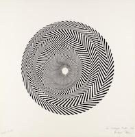

Timeline on Western Art Periods
| no. |
Time Periods |
Art Movement |
Well-Known Artists |
Influences |
Pictures |
| 1 |
40,000-4,000 B.C. |
Prehistoric Art |
- Rainbow Serpent Rock. Western Arnhem Land. Australia.
- Lion-Human. Hohlenstein-Stadel. 40,000–35,000 B.C. Germany.
|
Lascaux Cave paintings, Paleolithic era, France. |
|
| 2 |
30,000 B.C.- A.D. 400 |
Ancient Art |
- Great Pyramids, Giza. Fourth Dynasty, 2575–2450 BCE. Egypt.
- Nike (Victory) Adjusting Her Sandal. Last quarter of the 5th century (perhaps 410–405) B.C. Athens.
- Alexandros from Antioch-on-the-OrontesAphrodite of Melos (Venus De Milo). 150–100. Paris.
|
Mesopotamia, Code of Hammurabi, 1754 B.C. |
 |
| 3 |
A.D. 500 - A.D. 1400 |
Medieval Art |
- The Good Shepard, Orants and the Story of Jonah. Late 3rd–early 4th century. Rome.
- Wiligelmo. Creation and Fall of Adam and Eve. (West Façade, Modena Cathedral). Romanesque Period. 1099. Italy.
- Rose Window and Lancets (North Transept, Chartres Cathedral). Gothic period. 1230-1235.
|
Giotto Di Bondone, Lamentation (The Mourning of Christ), 1288. |
|
| 4 |
1400 - 1600 |
Renaissance |
- Michelangelo. Tombs of Lorenzo and Guiliano de Medici in San Lorenzo. 1520-1534. Italy.
- Lucas Cranach the Elder. Venus Complaining to Cupid. 1526-1527. Germany/U.K.
- Titian. Bacchus and Aridne. 1522-1523. Italy/U.K.
|
Raphael, The School of Athens, 1511. |
 |
| 5 |
1527 - 1580 |
Mannerism |
- Jacopo Pontormo. Entombment/Deposition from Cross. 1525-1528. Italy.
- Jacopo Pontormo.Visitation. 1528-1529. Italy.
|
Giuseppe Arcimboldo. Portrait of Rudolf II 1590. |
|
| 6 |
1600 - 1750 |
Baroque |
- Artemisia de Gentileschi. Judith Slaying Holofernes. 1614-1620. Italy
- Diego Velazquez. Les Meninas. 1656. Spain.
- Jusepe de Ribera. Bearded Woman. 1631. Italy/Spain.
|
Caravaggio, The Calling of St. Matthew, 1600. |
|
| 7 |
1699 - 1780 |
Rococo |
- Jean-Antoine Watteau. Gilles/Pierrot 1718-1719.
- Francois Boucher. Autumn Pastoral. 1749. France/U.K.
- William Hogarth. Marriage A-La-Mode. 1745. France/London.
|
Jean-Honoré Fragonard, The Swing, 1767. London. |
|
| 8 |
1750 - 1850 |
Neoclassicism |
- Josiah Wedgwood. Am I Not a Man and a Brother? 1787. U.K.
- Johan Zoffany. Family of Sir William Young. 1767-1769. U.K.
- Jacque-Louis David. Coronation of Napolean. 1806. France.
|
Jacques-Louis David, Napolean Crossing the Alps, 1801. |
|
| 9 |
1780 - 1850 |
Romanticism |
- Francisco Goya. Saturn Devouring His Son. 1819-1823. Spain.
- Eugene Delacriox. Liberty Leading the People. 1830. France.
- J.M.W. Turner. The Slave Ship. 1840. U.K./U.S.
|
Henry Fuseli, The Nightmare, 1781. |
|
| 10 |
1848-1900 |
Realism |
- Gustave Courbet. The Stone Breakers. 1849-1850.
- Thomas Eakins. The Gross Clinic. 1875. Philadelphia, U.S.
- Édouard Manet. Le déjeuner sur l'herb (Luncheon on the Grass). 1862-1863. France.
|
Jean-Françoise Millet, The Gleamers, 1857. |
 |
| 11 |
1890 - 1910 |
Art Nouveau |
- Gustav Klimt. The Kiss. Symbolism Period. 1907-1908. Austria.
- Henri de Toulouse-Lautrec. Ambassadeurs: Aristide Bruant. 1892. France.
- Alphonse Mucha. Job (Cigarettes). 1898. France.
|
Alphonse Mucha, Princess Hyacinth, 1911. |
|
| 12 |
1865 - 1885 |
Impressionism |
- Edouard Manet. A Bar at the Folies-Bergere 1882. France/U.K.
- Claude Monét. Waterlillies and the Japanese Bridge. 1897-1889. France/U.S.
- Mary Cassatt. Little Girl in a Blue Armchair. 1878. France.
|
Claude Monet, Impression, Sunrise, 1899. |
 |
| 13 |
1885 - 1919 |
Post-Impressionism |
- Paul Signac. Place des Lices, St. Tropez. 1893. U.S.
- Vincent Van Gogh. The Starry Night. 1889. New York.
- Paul Gauguin. Nafea Faa Ipoipo. 1892.
|
George Seurate, A Sunday Afternoon on the Island of La Grande Jatte, 1886. |
 |
| 14 |
1900 - 1935 |
Fauvism |
- Henri Matisse. Woman with a Hat. 1905. France.
- Marc Chagall. Les Mariés de la Tour Eiffel (The Betrother and the Eiffel Tower). Naïve art/Modernist period. 1939-1939. France.
- Raoul Dufy. L'atelier (Workshop?). 1966.
|
Henri Matisse, The Goldfish, 1912. |
 |
| 15 |
1905 - 1920 |
Expressionism |
- Pablo Picasso. The Old Guitarist. Picasso's Blue Period. 1903-1904. Spain/U.S.
- Egon Schiele. Seated Woman with Legs Drawn Up (Adele Herms). Vienna Secession Period. 1917.
- Edvard Munch. Love and Pain/Vampire. Expressionism/Symbolism period.1893-1895.
|
Edvard Munch, The Scream, 1910. |
 |
| 16 |
1907 - 1914 |
Cubism |
- George Braque. Violin: Mozart Kubelick. 1912. France/U.K.
- Pablo Picasso. Girl with Mandolin. 1910. France/U.S.
- Jacob Lawrence. The Business Men. Social Realism/Harlem Renaissance period. 1947. U.S.
|
Pablo Picasso, Guernica, 1937. Paris/Madrid. |
|
| 17 |
1917 - 1950 |
Surrealism |
- Rene Magritte. Son of Man. 1964. Belgium/Private Collection.
- Salvador Dali. Persistence of Memory. 1931. New York.
- Max Ernst. Oedipus Rex. 1922.
|
Frida Kahlo, The Two Frida, 1939. Mexico City. |
 |
| 18 |
1940s - 1950s |
Abstract Expressionism |
- Willem de Kooning. The Attic. 1952-1953. U.S.
- Mark Rothko. no.5/no.22. 1949-1950. U.S.
- Francis Bacon. Portrait of Pope Innocent X. European Figurative Period. 1953. U.K./U.S.
|
Jackson Pollock, Autumn Rhythmn (Number 30), 1950. New York City. |
 |
| 19 |
1950s - 1960s |
Op Art |
- Victor Vasarely. Zebra. 1937.
- Jesús Rafael Soto. Doble progresión azul y negra (Double Progression Blue and Black). Op art/Kinetic art period. 1975.
|
Bridget Riley, Blaze, 1962. |
 |
| 20 |
1950s - 1960s |
Pop Art |
- Roy Lichtenstein. Drowning Girl. 1963. U.S.
- David Hockney. A Bigger Splash. 1967. U.S/U.K.
- Keith Haring. Ignorance=Fear/Silence=Death. Post-War Art/ Neo-Expressionism period. 1987. U.S.
|
Andy Warhol, Marilyn Diptych, 1962. Tate Britain. |
 |
| 21 |
1960s |
Art Povera |
- Giulio Paolini. L'altra figura. Conceptual art period. 1984.
- Jannis Kounellis. Untitled 1984/87. 1987. Australia.
|
Mario Merz, Giap's Igloo, 1968. Rome. |
 |
| 22 |
1960s - 1970s |
Minimalism |
- Agnes Martin. The Wall #2 1962. U.S.
- Eva Hesse. Repetition 19, III. Post-Minimalism period. 1968. U.S.
- Dan Flavin. Diagonal of May 25, 1963. Installation Art. 1963.
|
Josef Albers, Homage to the Square, 1964. Tate Britain. |
|
| 23 |
mid. 1960s - mid. 1970s |
Conceptual Art |
- Félix González-Torres. Untitled (Portrait of Ross in L.A.) Minimalism/ Conceptual Art period. 1991. U.S.
- Joseph Kosuth. One and Three Chairs. Installation Art. 1965.
- Damien Hirst. Mother and Child, Divided. 1993. U.K.
|
Marcel Duchamp, Fountain, 1917. |
|
| 24 |
1970s - present |
Contemporary Art |
- Kara Walker. World Exposition. 1997.
- Jeff Koons. Bouquet of Tulips. 1995-2004.
- Jean-Michel Basquiat. Bird on Money (for Charlie Parker). 1981. U.S./Private Collection.
|
Yayoi Kusama, All the Eternal Love I Have for Pumpkins, 2016. London. |
|